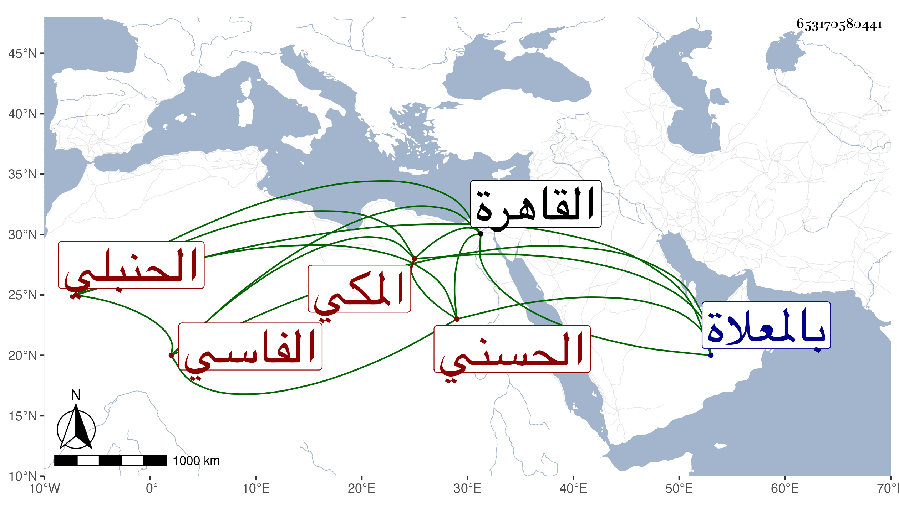

0902Sakhawi.DawLamic.ITO20230111-ara1.EIS1600.653170580441
Biography ID: 653170580441
أحمد بن عبد القادر بن أبي الفتح محمد بن أحمد أبي عبد الله الحسني الفاسي المكي الحنبلي . ولد بعد العشرين وثمانمائة ، ومات أبوه وهو صغير فكفلته أمه وهي أم الوفاء ابنة الإمام رضي الدين محمد بن المحب محمد بن الشهاب أحمد بن الرضي الطبري ، وسمع من أبي شعر وأبي المعالي الصالحي وأبي الفتح المراغي والتقي ابن فهد وإبراهيم الزمزمي وابن أخيه عبد السلام وأجاز له في سنة تسع وعشرين جماعة منهم الواسطي والزين الزركشي وابن الفرات وعائشة الحنبلية والتدمري والقبابي وخلق ، وناب في إمامة المقام الحنبلي وقتا ودخل القاهرة وكان مفرط العقود . مات في ضحى يوم الخميس ثاني صفر سنة إحدى وستين وصلى عليه بعد صلاة الظهر ودفن بالمعلاة رحمه الله .
